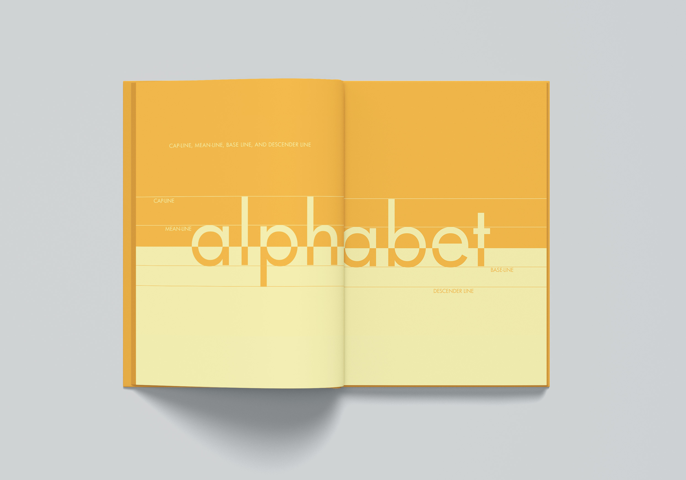
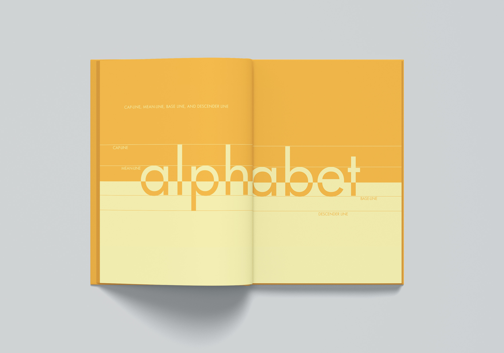
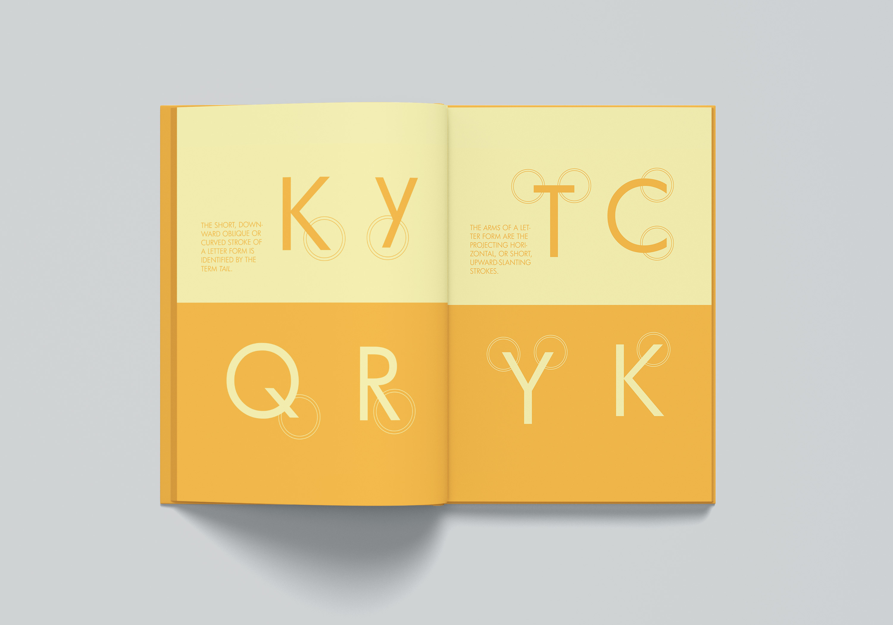
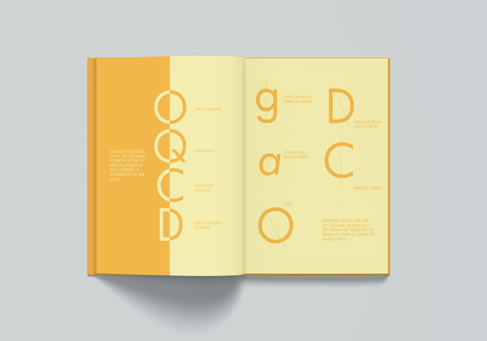

Letterforms Book
Objective
The objective for this project was to design a book that is organized and easy to understand with the goal to explain the structures of letterforms.
My idea
My idea for the book was to create a consistent and simple design using only two colors and simple graphics.
Final
 


